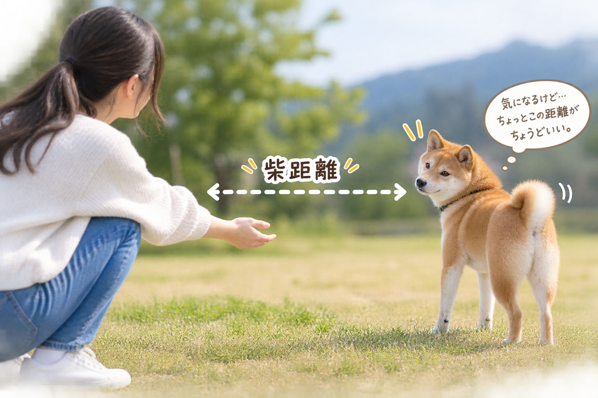
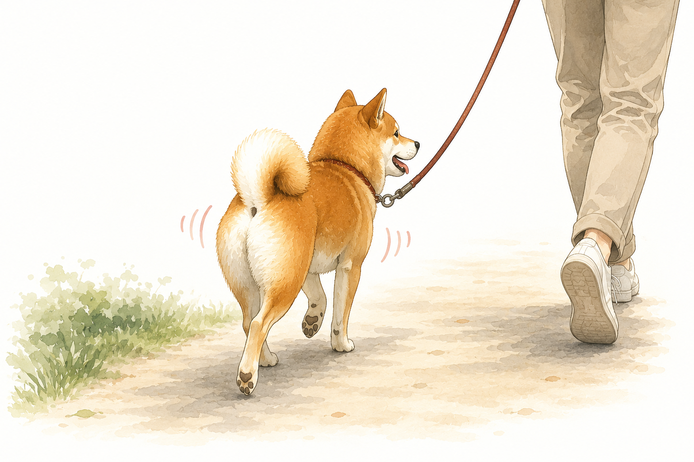

柴犬との生活って？
柴犬の常識
当サイトの「About」や「Care」の項目を見て、柴犬の特性など柴犬についてある程度わかってきたと思います。それでも柴犬は生き物なためみんな同じではなく、１匹１匹違う癖や考えを思っています。
ですが一つだけみんなに共通している事があります。それは、
「柴犬を一度飼うと柴犬にハマってしまう」
という事です。理由は分かりませんが飼ったことがある人は必ず共感するであろう事なのです。
エピソード
柴犬と実際に生活してみると、独特な性格で面白いところが本当にたくさんあります。
そんな柴犬らしさが詰まった代表的なエピソードをお届けします。
これを見て、ぜひ柴犬の可愛さや魅力を知ってもらえると嬉しいです。
① 柴距離
柴犬の一番と言って良いほど代表的な例である柴距離は主に二種類あります。

まず柴犬は素直じゃなく、疑いから入ることがほとんどです。（人間味すごいですよねw）
なので基本呼んでも自分に得がないと来ませんが、それでもきてくれる場合があります。その時にこの柴距離は発動して、制作者が勝手に「近柴距離」と呼んでいます。これは近くにきてくれるけど、手も足も物理的に届かない距離にいることを指します。
もう一つ「遠柴距離」があろ、これはただ遠くから監視している状態を指します。
一見すると人を見ることなんて普通に見えるかもしれませんが、柴犬にしかない謎の疑いの横目で見てくるのです。
例えば、人がご飯を食べている時に「何かくれないかな、くれないだろうな、」と言わんばかりに見てきたりすることがあります。人のような目線で犬が見てくるのは本当に面白いですよ。
② 柴犬の歩き方
柴犬オーナーなら、お散歩中に思わず後ろ姿をじっと見つめてしまう瞬間があります。他の犬種にはない、柴犬特有のあの独特な歩き方です。

注目すべきは、なんといってもその絶妙なリズム感。お尻を左右に「ふりふり」と振るだけでなく、ご機嫌なときは体全体が上下に「ぷりんぷりん」と弾むように跳ねるのです。
さらに、腰の上に乗った尻尾が、そのステップに合わせて「ちょんちょん」と小さく揺れる姿は、圧倒的な可愛さ。
まるで「お散歩が楽しくて仕方がない！」と、全身で喜びを表現しているような後ろ姿。この愛らしいお尻のステップを見ながら歩けるのは、柴犬の飼い主だけに許された最高の特等席です。